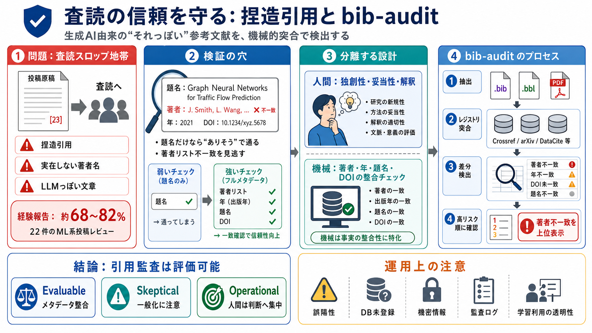

cover
02 / 14
査読の信頼を守る
捏造引用
と
生成AI由来の「それっぽい」参考文献が、査読の“スロップ地帯”をすり抜ける—その現場像と、参考文献監査ツール
bib-audit
の考え方を要点化します。
problem
03 / 14
slop trenches
現場で起きる
22件のML系投稿をレビューした経験ベースで、約
68%〜82%
（会場・担当者による）が「捏造引用／実在しない著者名／LLMっぽい文章」などに該当したと報告されています。
症状（例）
実在しない著者名・年・論文タイトル、根拠のない主張
本質
「それっぽさ」が査読を通過し、誤りが出版後も残る
metaphor
04 / 14
検証の穴
“近い名前”で通る
タイトルだけの存在確認や、表面的な照合ではすり抜けが可能です。実在著者の「近い名前」への置換で、著者リストの整合性が崩れても通過してしまうケースが語られます。
i
タイトルが“あるように見える”
ii
著者リストが“合わない”（ただし見られない）
architecture
05 / 14
分離する設計
機械と判断
重要なのは「レビューの科学的判断」と「参考文献の機械的突合」を分離し、後者を自動化することです。人間は研究価値の評価に集中できます。
人間（Human）
独創性・妥当性・実験設計・解釈の質
機械（Machine）
著者名／年／題名／DOI等の“整合チェック”
process
06 / 14
bib-auditの流れ
突合→差分
.bib
/
.bbl
やPDFから引用情報を構造化し、Crossref/arXiv/DataCite/Semantic Scholar等のレジストリと照合して差分を優先度順に提示します。
i
入力から引用メタデータを抽出（著者・年・題名・DOI等）
ii
レジストリと突合し、項目差分を検出
iii
“危険度が高い差分”（著者不一致など）を上位表示
iv
人間が必要箇所を確認（DOI等がない場合は補助）
distinction
07 / 14
タイトルだけでは不十分
著者リストまで
タイトル存在の確認だけだと、著者差し替えが通る余地があります。bib-auditが“著者リストを含めた差分”を取る設計は、この抜け道を塞ぎます。
弱いチェック
題名のみ「似ている／ある」
強いチェック
著者リスト（姓だけでなく一致）を突合
効果
“近い名前”の偽装を検出しやすくする
enumeration
08 / 14
なぜ問題化する？
責任と検証
問題は「LLMの利用」そのものではなく、ルール違反・検証不足・悪用可能性が重なる点にあります。
i
検証なしで“生成結果を提出”してしまう
ii
査読ルールに反してレビュー文をLLM作成する
iii
ホストLLMへ機密情報を渡すリスク
iv
AI査読が“騙せる”可能性（制度設計の難化）
evidence
09 / 14
広がる傾向
“例外”ではない
自由記述の体験談だけでなく、NatureやarXivの大規模監査、The Lancet、査読レビュー分析などでも同様の傾向が示唆されています。
観測（主張）
レビューが捏造引用を十分に捕捉できない可能性
結果（影響）
一度通った誤りが出版後も残り続ける
comparison
10 / 14
監査の強み
引用監査＝評価可能
参考文献の突合は、タイトル・著者名・年・DOIなど“評価可能な項目”に分解できるため、自動化の効果が高い領域です。
自動化に向く
メタデータ整合（著者／年／題名／DOI）
人間に残る
研究の価値判断（独創性・妥当性・解釈）
distinction
11 / 14
注意点（反証可能性）
誤判定と運用
22件というサンプルは一般化に限界があります。また、DB未登録・表記ゆれ・レジストリ側の誤りでは誤陽性/誤見立てが起こり得ます。
統計の壁
会場・担当者・分野の差が比率に影響
データの壁
DOI/arXiv IDなしは手作業確認が必要
運用の壁
大規模化で確認コストが再び増える可能性
architecture
12 / 14
ガバナンス必須
機密性と透明性
外部ホストLLMへの送信（少なくとも引用部分）には慎重な検討が必要です。制度化にはデータ取り扱い・監査ログ・モデル学習利用の有無などの透明性が不可欠です。
i
機密情報の扱い（何を送るか／送らないか）
ii
監査ログ（いつ・何が・どう判断されたか）
iii
学習利用の可否（モデルが保持・学習しない設計）
iv
制度としての“誤判定管理”
closing
13 / 14
まとめ
提案
は実務的
bib-auditの核は、レビューの“科学的判断”と“参考文献監査”を分離し、機械的突合を自動化することです。鍵は著者リストまで含めた差分、そして誤判定・機密性・統計的妥当性の管理にあります。
Evaluable
引用メタデータ整合＝検査可能
Skeptical
比率の一般化とDB誤差に注意
Operational
人間は確認と判断へ集中
REFERENCES
14 / 14
References
No references found